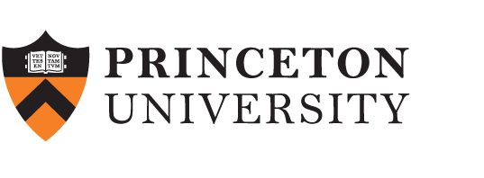

Princeton University
Ph.D. in Electrical and Computer Engineering (2017–2021)
M.A. in Electrical Engineering (2015–2017)
Assistant Professor
School of Computer Science
University of Birmingham
I am an Assistant Professor in the School of Computer Science at the University of Birmingham. My research interests include machine learning, information theory, and differential privacy.
Before joining Birmingham in 2026, I was a Leverhulme Early Career Fellow at the Statistical Laboratory, University of Cambridge, and previously a Research Associate there. I received my Ph.D. in Electrical and Computer Engineering from Princeton University in 2021, where I was advised by Emmanuel Abbe, after completing B.Sc. degrees in Mathematics and Electrical Engineering from Sharif University of Technology in 2015.


Ph.D. in Electrical and Computer Engineering (2017–2021)
M.A. in Electrical Engineering (2015–2017)
B.Sc. in Mathematics (2010–2015)
B.Sc. in Electrical Engineering (2010–2015)